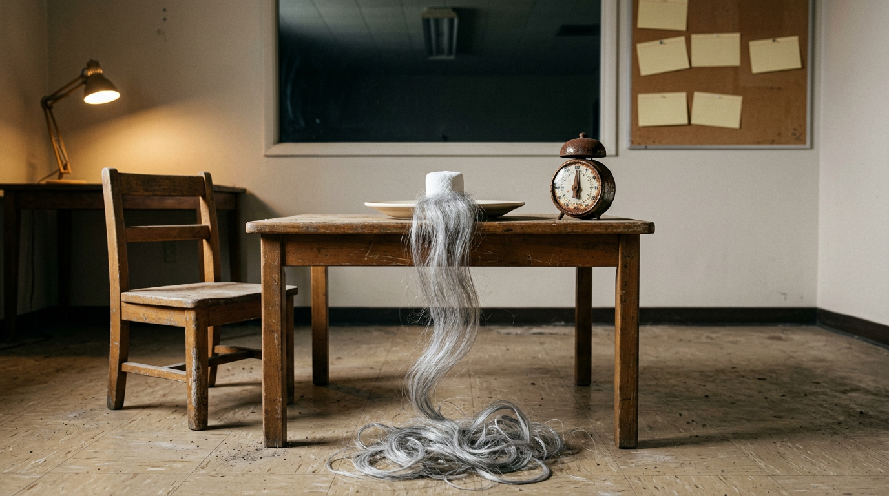

Lanterns y el Problema del Origen que Nunca Termina
Ocho Horas para Ponerse un Anillo: La TV de Prestigio Descubrió el Edging, y Quiero Hablar con el Encargado del Multiverso
Episodio dos. Último minuto.
Un tipo con traje verde se va del planeta, vuela hasta una cárcel espacial y se acerca a una celda donde lo espera un extraterrestre pelado, demacrado y magníficamente decepcionado, como un propietario que ya se enteró de lo del perro.
Sinestro.
Me enderecé. No es una forma de decir. La columna se me despegó del almohadón del sillón sola, como la de un suricata cuando oye un halcón, y puede que haya gemido, igual que mi esposa me escucha cuando es hora de la fiesta… y puse una cara de bobo de placer absoluto. ¡SÍ!
Eso fue Lanterns de HBO, episodio dos, “Trust Fall,” y durante unas cuarenta y ocho horas internet se comportó como una fraternidad que encontró un libro de hechizos de mago en el sótano. La luz amarilla significaba Parallax. El compañero de cuarto del primo de alguien estaba SEGURO de que venía la Noche Más Oscura y Nekron ya estaba metido en las paredes. A cualquier personaje secundario con la cara un poco colorada lo acusaban de ser un Linterna Roja.
Y sí, vos. Te estoy mirando a vos. Tenías un Google Doc. Tenías pestañas por colores. No me mientas, desde acá veo las pestañas.
La serie se estrenó el 16 de agosto, juntó 9,3 millones de espectadores en el mundo en sus primeros tres días, y las miguitas de pan estaban por todos lados. Lo cósmico se VENÍA. Se olía, como el ozono antes de una tormenta, o como un Cinnabon en un aeropuerto, que es la misma sensación pero con más arrepentimiento.
Después, de a poco, a lo largo de ocho domingos, me empezó a picar la sensación.
Ya sabés cuál. Es la que tenés cuando en una primera cita la otra persona no para de describirte el restaurante al que te va a llevar “la próxima.” Es un pagaré con un lindo corte de pelo.
John Stewart. Con H. Y un Anillo en el Bolsillo.
Pasemos lista rápido para los del fondo que están acá solo porque el título decía “edging.”
Lanterns sigue a dos Linternas Verdes: Hal Jordan, el veterano, interpretado por Kyle Chandler con el cansancio seco y curtido por el sol de un tipo que entrenó fútbol americano de secundaria y al universo en la misma semana, y John Stewart, el recluta, interpretado por Aaron Pierre. No el del Daily Show. El de la H. El que, en los cómics, es arquitecto, marine y uno de los grandes Linternas Verdes de todos los tiempos.
La serie es un misterio de asesinato en Rushville, Nebraska, una vuelta de True Detective con policías espaciales, creada por Chris Mundy, Damon Lindelof y Tom King), con Mundy como showrunner, Lindelof escribiendo el piloto y todo funcionando bajo el DC Studios de James Gunn y Peter Safran.
Y Lindelof, a mi entender, estaba revolviendo su propia colección de discos. Su Watchmen para HBO ganó once Emmys en 2020, y también era una historia de héroes heredados envuelta en un misterio de pueblo chico envuelto en una identidad secreta envuelta en una pregunta sobre quién tiene derecho a ponerse la máscara. Lanterns es eso, con un anillo. Grandes éxitos, remasterizados, tapa nueva, mismo lado B.
No es un insulto, eh. Si yo tuviera once Emmys también los pasaría en todas las fiestas. Los pasaría en los velorios.
Esta es la línea de tiempo que importa:
Episodio dos: Sinestro, en una celda, advirtiéndole a Hal que la amenaza más grande es John.
Episodio cinco: John por fin tiene el anillo de Hal en la mano.
Episodio ocho, el final, “Dirt and Stars,” 4 de octubre: John por fin acepta el papel y recita su propia versión del juramento.
Lo tuvo en el episodio cinco. Se lo puso en el episodio ocho.
Tres episodios. Son tres horas de televisión de prestigio en las que un tipo anda por ahí con lo que sale en el póster metido en los PANTALONES.
Y aun así, el cocreador Tom King explicó después del final que John “ya no es un Linterna Verde al cien por ciento.” Guy Gardner sigue teniendo el anillo oficial del sector. O sea que esperamos ocho horas el anillo, nos dieron el anillo, y nos avisaron que el anillo viene con asterisco.
Antes de la mitad de la temporada, el showrunner Chris Mundy también había explicado por qué Sinestro no iba a tener su momento de villano esta temporada. Una frase que me gustaría tatuar en la parte de adentro de los párpados de cada ejecutivo de cadena: el villano del póster no va a hacer nada este año.
A la crítica le encantó. Un crítico dijo que lograba la rara hazaña de contar una historia completa. El final juntó 10,5 millones de espectadores en el mundo, un récord para la serie. Lo llamaron una síntesis completa de la temporada. Fue, juro por Dios, imponente.
Y me dejó un gusto en la garganta como si hubiera lamido el interior de un frasco de monedas.
Porque esto ya lo VI. Lo vi tantas veces que lo podría hacer dormido, y creo que lo hice, y creo que en el sueño también tenía puesta una capa que todavía no me había ganado.
El Día de la Marmota, Auspiciado por un Anillo
Smallville duró diez temporadas. Diez. Doscientos diecisiete episodios de un pibe con camisa leñadora NO volando. El trato estaba ahí en el pitch: sin mallas, sin vuelos. Y lo cumplieron, que Dios los ayude, durante una década, hasta que el final de la serie por fin dejó que Clark despegara y nos mostró el traje en planos tan breves que te los podías perder parpadeando o teniendo un hijo.
El público envejeció en tiempo real. La gente pasó de la secundaria a la hipoteca esperando que ese pibe levantara los pies del piso. Alguien empezó a ver Smallville soltero y la terminó divorciado.
Ahora mirá a Frank Castle, porque el Punisher es el caso de estudio más limpio de todo el género, un tipo atrapado en una puerta giratoria que alguien sigue empujando con una picana.
2016: la segunda temporada de Daredevil presenta al Punisher de Jon Bernthal. Historia de origen.
2017: primera temporada de The Punisher. Historia de origen, otra vez, más profunda.
2019: segunda temporada de The Punisher. Según mi cuenta, de vuelta a la casilla uno, un tipo descubriendo quién es.
12 de mayo de 2026: The Punisher: One Last Kill, un especial de una hora en Disney+ coescrito por Bernthal. Y en la escena final, la del clímax, Frank se vuelve a poner el chaleco con la calavera.
La escena final. De un especial de una hora. Sobre el Punisher. Convirtiéndose en el Punisher.
Voy a ser justo con Frank. Su historia es una escena del crimen de acuerdos de licencias, contratos con Netflix, una cancelación, un traspaso de estudio y suficientes abogados para poblar una pequeña nación báltica. Parte de ese loop es papeleo, no narrativa. Mismo indulto parcial para Daredevil.
Pero eso es una explicación, no una defensa. Y es exactamente la misma sensación que ver el radio despertador de Bill Murray pasar a las seis de la mañana en El día de la marmota, escuchar “I Got You Babe” arrancar por cuatrocentésima vez y darte cuenta de que en algún lugar arriba tuyo una sala de guionistas decidió que Punxsutawney es toda la serie.
STOP.
Pará a un costado. Balizas. Bajate del auto.
Estamos por cruzar la calle hacia el barrio de Marvel, y algunos de ustedes ya están yendo a la caja de comentarios con un Funko Pop de un personaje de Marvel mirándolos desde el estante como un santo católico decepcionado. Soltá el Funko. Lo veo. Veo la credencial de una convención a la que fuiste en 2019 y que todavía usás para ir al súper. Lo vamos a hacer igual.
Mientras Tanto, Cruzando la Calle, Alguien Patea la Puerta
Ya sé. YA SÉ. A las series de Marvel en Disney+ les llueven palos, algunos merecidos, y no soy el puto Kevin Feige, así que no voy a hacer de cuenta que sé qué partida del presupuesto pagó qué pantalla verde mala.
Pero mirá qué rápido llegan a lo importante.
Loki, primera temporada, arranca con un misterio: alguien está matando agentes de la Autoridad de Variación Temporal. Al final del episodio dos ya sabemos quién: otro Loki. Misterio resuelto en la SEGUNDA HORA, y después la serie se pasa el resto de su recorrido volviéndose loca con lo que significa la respuesta.
Falcon y el Soldado del Invierno arranca con una persecución aérea. No con una charla sobre si a Sam algún día le gustaría volar. Un tipo con alas, en el aire, a las piñas.
Moon Knight. Para el final del episodio uno, Steven Grant, un empleado tranquilo de la tienda de regalos de un museo de Londres, con un pez dorado y un trastorno del sueño, dejó de ser tranquilo. Le pasa el volante a Marc, llega el traje y a un monstruo chacal le reacomodan la cara adentro del museo. Episodio UNO.
WandaVision juega a disfrazarse de sitcom, pero al final del episodio tres se cae la máscara y entendés que Wanda es la que tiene el control remoto. Esa es la revelación que la mayoría de las series guardaría para el final. Ellos la gastaron en la semana tres como un marinero de franco.
Agatha All Along hace salir a los Siete de Salem cabalgando entre la niebla dentro de su estreno de dos episodios.
Y ahora VisionQuest, que se estrenó el 14 de octubre. Entré pensando que iba a ser una sola idea hermosa y descabellada, inteligencias artificiales peleándose adentro de la mente de Vision, un seminario de filosofía con efectos láser. En cambio es una serie de acción con pulso. El Ultron de James Spader está en el centro desde el arranque, y Jocasta, T’Nia Miller, debutó en los episodios tres y cuatro el 20 de octubre. Episodio tres. No tengo idea de adónde va, y esa es la EMOCIÓN, porque se siente la proporción: no está acaparando sus juguetes. Está jugando con ellos delante tuyo, y de vez en cuando prendiéndoles fuego.
Podés no estar de acuerdo conmigo sobre si alguna de esas series es BUENA. Te discuto la contraria en un bar durante tres horas, pierdo, pago yo. Pero cobran el cheque. Ponen lo del póster en el primer acto y después se desafían a superarlo.
El enfoque de DC y HBO es el opuesto. Es un mago que se pasa cuarenta y cinco minutos mostrándote que la caja está vacía, golpeándole los costados, invitando a un voluntario a revisar las bisagras, y después pasan los créditos y un locutor anuncia que el serrucho sale la temporada que viene. Si la renuevan.
Al Malvavisco le Creció la Barba

Volvamos al jardín de infantes, porque explica TODO.
En los experimentos de Mischel, un chico se sienta en una mesa con una golosina. El investigador le dice: comela ahora, o esperá, y te doy dos. Después el investigador se va de la sala. Algunos chicos se la comen en un segundo. Otros se cantan a sí mismos, se tapan los ojos, patean la mesa, miran el techo como monjes, y aguantan.
Los que aguantaron recibieron DOS.
Ese es el trato. Ese es todo el contrato social de la gratificación diferida: sufrís ahora, y el universo te lo devuelve con intereses. Hasta la ciencia posterior respeta el trato. Una réplica de 2018 de Tyler Watts, Greg Duncan y Haonan Quan encontró que el vínculo a largo plazo entre esperar y el éxito posterior era mucho más débil que en la versión famosa, y que se explicaba en gran parte por el contexto de los chicos. El malvavisco no es el destino. Pero el chico que esperó igual recibió el segundo malvavisco. Nadie volvió a entrar a la sala a decir: “Muy bien por esperar. Acá tenés el mismo malvavisco de antes, ahora con un anillo, y además te renovamos por otros quince minutos.”
Esa es la historia de origen que nunca termina. El malvavisco está ahí tanto tiempo que le crece la barba. La barba se pone gris. El temporizador se oxida. El chico está en la facultad. El malvavisco se convierte en un Gandalf y empieza a darle consejos a todo el mundo sobre que la espera es lo importante.
Y esta es mi teoría, que es una teoría, de un tipo con un blog y una contraseña de HBO Max, no un memo filtrado.
Lanterns se estrenó el 16 de agosto y terminó el 4 de octubre. Son cuarenta y nueve días. Dos ciclos de facturación. Entregas semanales de una historia cuya recompensa vive en el último episodio son una máquina hermosa para que tu tarjeta siga registrada durante los dos. Una serie que te da el anillo en el episodio dos te da permiso para irte. Una serie que te da el anillo en el episodio ocho te mantiene pagando para averiguar si el anillo existe.
Así que la espera no es un efecto secundario de la narrativa. Cada vez más, la espera ES el producto. Es lo que se vende, se mide, se renueva. La televisión descubrió el edging, y nos lo cobra todos los meses.
No soy Geoff Johns. No te puedo decir qué color del espectro emocional corresponde a “leve tensión abdominal durante un episodio de resumen.” Pero te apuesto una batería de poder a que es el amarillo, y es MIEDO. Miedo a que canceles antes de la parte buena.
Lost Armó la Caja. Todos los Demás Compraron la Franquicia.
Nada de esto empezó en HBO. Empezó en una isla.
Lost se emitió entre 2004 y 2010, creada por J.J. Abrams, Damon Lindelof y Jeffrey Lieber. En 2007, Abrams dio una charla TED sobre la “caja misteriosa,” una caja de magia de verdad que compró de chico y nunca abrió, porque no saber era más emocionante que lo que hubiera adentro. Esa charla se volvió evangelio. El misterio es mejor que el conocimiento. La pregunta es el producto. La caja queda cerrada.
Y mirá quién volvió, en una serie armada alrededor de una caja (un estuche de anillo, en realidad) que queda cerrada durante ocho horas. La carrera de Lindelof es un tipo paseando la misma caja de cadena en cadena como un perro que no para de traerte la misma pelota de tenis babeada. Que quede claro, es una pelota MUY BUENA. The Leftovers es una de las mejores cosas que se hicieron para televisión. Pero el perro tiene un tipo.
El truco funcionó tan bien que se volvió un cliché, y el cliché se volvió un modelo de negocio, y el modelo de negocio se volvió el clima. Los Anillos de Poder de Amazon se pasó toda su primera temporada con la pregunta “¿quién es Sauron?” y la respondió en el final de temporada, ocho episodios después, como un mozo que te trae la panera y después la cuenta. Netflix tiene su propio salón de la vergüenza, y te dejo completarlo abajo, porque vos tenés opiniones y yo tengo un límite de palabras.
Empezamos a aceptarlo. Eso es lo que me molesta. Dejamos de pedir la recompensa y empezamos a agradecerles los preliminares. Calificamos las miguitas. Reseñamos la EXPECTATIVA. En algún lado un crítico está escribiendo una reseña de cinco estrellas del tráiler de un tráiler.
El Factor Sorpresa Es un Plan de Pagos
Este es el caso que me dio ganas de escribir todo esto.
House of the Dragon. (Tuve que buscar el nombre. Es la de los Targaryen y los dragones y las pelucas que parecen estar mudando el pelaje de invierno. La precuela de Game of Thrones.)
Primera temporada: fantástica. Termina con un cliffhanger, un hijo muerto y la cara de una madre que dice que la guerra ya es inevitable. Nos vamos a la guerra. Por fin.
Segunda temporada: ¿cuándo viene la guerra? ¿Cuándo viene la guerra? ¿CUÁNDO viene la guerra? Es una temporada entera de gente con túnicas parada en cuartos con corriente de aire diciéndose que la guerra se viene, como Moisés en el monte Nebo mirando la Tierra Prometida durante cuarenta años y escuchando que puede mirar pero no puede entrar. La crítica y los fans le pegaron por el ritmo lento, y algunos críticos le echaron parte de la culpa a los límites de presupuesto.
Ahora compará con la serie madre. Game of Thrones también se pasó años prometiéndonos un final. Winter is coming era todo el departamento de marketing. Pero en el camino al invierno, PAGABA. En el episodio nueve de la primera temporada, la serie le cortó la cabeza a su protagonista, en las escalinatas, delante de sus hijas. El final de la primera temporada hizo nacer dragones de una pira funeraria con una mujer desnuda sentada entre las cenizas. La espera era el plato principal. La sorpresa se servía en pasos.
Esa es la diferencia, y es todo el post en una oración: una espera larga está bien. Una espera larga sin pagos es una estafa.
Los clásicos lo sabían.
Breaking Bad, primera temporada, episodio dos: un cuerpo disuelto en ácido cae a través del techo. EPISODIO DOS.
Alien: el bicho que revienta el pecho llega a la cena sin avisar, y nadie en esa mesa volvió a querer postre. Yo tampoco.
Los Soprano te da a un tipo estrangulando a un soplón con un alambre en un episodio de recorrida por universidades en la primera temporada, mientras su hija está en una entrevista de admisión.
Fringe te daba una cosmología entera una semana y un tipo derritiéndose en una baba en un avión a la siguiente.
Ninguna de estas series estaba apurada. Todas eran pacientes, de cocción lenta, de largo plazo. Y todas entendían el trato: me podés hacer esperar el final todo lo que quieras siempre que me des algo asombroso en cada salida de la autopista. El factor sorpresa no es un premio al final. Es un plan de pagos.
La historia de origen que nunca termina se saltea las cuotas y te pide que confíes en el pago final globo. Y ya viví lo suficiente para saber qué les pasa a los que confían en los pagos globo. Terminan en Florida.
Los Argumentos en Mi Contra, que Son Molestamente Buenos
Prefiero derribar mi propio argumento antes de que lo haga el comentario más votado. Acá va lo mejor que hay en mi contra.
Uno: House of the Dragon demostró que la paciencia paga. La tercera temporada se estrenó el 21 de junio de 2026 y arrancó con la Batalla del Gaznate, que la showrunner llamó “probablemente el episodio de televisión más loco que se haya hecho.” A la crítica le encantó. La temporada logró el puntaje más alto de la franquicia en Rotten Tomatoes. Así que la temporada lenta preparó la explosiva. Justo. Pero mirá el calendario. La primera temporada terminó con un cliffhanger que prometía guerra en octubre de 2022. La primera gran batalla de la guerra salió al aire en junio de 2026. Eso es la temporada TRES. Tres temporadas, casi cuatro años, prácticamente un mandato presidencial entero esperando que una serie empiece la pelea que anunció. Y “la recompensa llegó al final” es exactamente la defensa que va a usar cada historia de origen que nunca termina. Todas. La pregunta no es si el pago llegó. Es si hiciste comer cartón a la gente durante cuatro años para llegar ahí.
Dos: Breaking Bad ES una historia de origen. Cinco temporadas de un profesor de química convirtiéndose en Heisenberg. Culpable. Salvo que el tipo estaba cocinando metanfetamina en calzoncillos en el PILOTO. La historia de origen era la columna, no la demora. Cada episodio lo bajaba un escalón. Esa es la diferencia entre una escalera y una sala de espera.
Tres: el público no está de acuerdo conmigo. Lanterns creció a medida que avanzaba. El final marcó el récord de la serie, y la audiencia del estreno siguió subiendo a lo largo del recorrido hasta unos treinta millones. La gente no se bajó. Se metió más. Tal vez yo soy el chico que se comió el malvavisco en once segundos y ahora escribe un blog enojado sobre los otros chicos.
Cuatro: contó una historia completa. No es poca cosa en una época de temporadas que terminan en un precipicio y una cancelación. Lanterns aterrizó el avión. Y una historia de origen es lo honesto cuando estás presentando todo un rincón cósmico de un universo nuevo a gente que nunca oyó hablar de John Stewart y cree que Sinestro es una colonia.
Cinco: que Marvel pague rápido no salvó a Marvel. Mucha gente terminó agotada por la manguera de Disney+. Las recompensas rápidas y las malas pueden viajar juntas.
Sostené los cinco. Son reales. Después sostené esto: nada de esa lista obliga a una serie a sentarse arriba de su juguete más grande durante ocho horas. Podés presentar un universo nuevo Y volar algo por el aire en el episodio tres. Moon Knight presentó un panteón egipcio entero a gente que creía que Khonshu era un estornudo, y él ya tenía el traje puesto antes de los primeros créditos.
Cobrá el Cheque
En algún lugar, en una habitación de motel en Rushville, Nebraska, hay un estuche de anillo sobre una mesita de luz. Lo abrís. Adentro hay otro estuche. Abrís ese. Otro estuche. El brillo verde está ahí abajo, débil, prometedor, siempre a una bisagra más de distancia.
Y al fondo del pasillo, en un cuarto beige con un espejo unidireccional, hay un malvavisco en un plato con una barba hasta el piso y un temporizador oxidado al lado, y está muy, muy orgulloso de todo lo que esperó.
No les pido que se apuren. Soy un hombre paciente. Fui corredor. Sé lo que se siente en una carrera larga.
Pero hasta una maratón tiene puestos de hidratación.
Dame un puesto de hidratación. Dame una cabeza en una escalinata. Dame un cuerpo a través del techo. Dame un extraterrestre pelado en una cárcel espacial y después, por amor a todos los Guardianes de Oa, dejalo hacer algo antes de que me jubile.
Cobrá el cheque. O al menos mostrame que hay plata en la cuenta.
Preguntas Rápidas Desde la Tribuna Barata
¿John Stewart se convierte en Linterna Verde en el final de Lanterns?
Sí, con asterisco. En el final de la primera temporada, “Dirt and Stars,” emitido el 4 de octubre de 2026, John Stewart (Aaron Pierre) acepta el papel de Linterna Verde de la Tierra y recita su propia versión del juramento. Recibe por primera vez el anillo de Hal Jordan en el episodio cinco. El cocreador Tom King dijo después que John “ya no es un Linterna Verde al cien por ciento,” y Guy Gardner (Nathan Fillion) sigue teniendo el anillo oficial del sector.
¿Quién creó Lanterns de HBO?
Lanterns fue creada por Chris Mundy, Damon Lindelof y Tom King. Mundy es el showrunner, Lindelof escribió el piloto y la serie se produce con DC Studios, dirigido por James Gunn y Peter Safran. Se estrenó el 16 de agosto de 2026 y tuvo ocho episodios.
¿Cuándo aparece Sinestro en Lanterns?
Sinestro, interpretado por Ulrich Thomsen, debuta al final del episodio dos, “Trust Fall,” cuando Hal Jordan lo visita en una cárcel intergaláctica. El showrunner Chris Mundy dijo que Sinestro no iba a tener su giro completo de villano en la primera temporada.
¿Qué es una historia de origen que nunca termina?
Es un patrón en el que una serie pasa la mayor parte o la totalidad de su duración construyendo hacia el momento en que un héroe asume su identidad famosa, y entrega ese momento al final de todo, a veces de nuevo en la temporada siguiente. Smallville (diez temporadas antes de que Clark vuele en el final) y los reinicios repetidos del Punisher son ejemplos comunes.
¿Vale la pena ver VisionQuest?
VisionQuest se estrenó en Disney+ el 14 de octubre de 2026, como la tercera parte de la historia que empezó con WandaVision y Agatha All Along. Pone al Ultron de James Spader en el centro desde temprano, y Jocasta (T’Nia Miller) debuta en los episodios tres y cuatro. Si es buena lo decidís vos, pero no acapara a sus grandes personajes.
¿Qué es la caja misteriosa en la escritura de series?
La “caja misteriosa” viene de una charla TED de 2007 de J.J. Abrams, cocreador de Lost, sobre una caja de magia que compró de chico y nunca abrió porque el misterio era más emocionante que el contenido. Se volvió una forma abreviada de referirse a las series que funcionan a base de preguntas sin responder en lugar de recompensas.
Fin del descargo. El anillo sigue en el estuche. El estuche sigue en el estuche. Y el malvavisco te manda saludos.